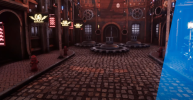
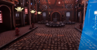

Présentation
Compétences
Projets
Contact
Bastien Prob
Game Designer et Developpeur

Âgé de 21 ans, je suis actuellement en Mastère Européen Jeux Vidéo et Serious Game dans l'école Ludus-Académie, ce qui correspond à une cinquième année au sein de cette école. Je suis un passionné de jeux vidéo et m'applique dynamiquement dans l'apprentissage de la création de ceux-ci.
Compétences
Softskills
Moteurs
de prédilection
Algorithmie et Programmation
Prototypage moteurs
Développement VR
Développement Web
Game Design
UX Design
Narrative Design
Level Design
Serious Game Design
Communication
Dynamisme
Créativité
Ponctualité
Construct 2
Unity
Unreal Engine 4
Renpy
CodeBlocks SDL
Projets professionnels réalisés
PacHuman


PacHuman est un advergame réalisé pour la société Atheo Ingenierie, en 3 mois, avec Cedric Maggay et Anthony Lamour. Le jeu reprend les valeurs de l'entreprise pour renouveller le Pacman tel qu'on le connait. J'ai pu m'occuper de la production de documents de projet, de la gestion des tâches de l'équipe ainsi que des rapports et échanges profesionnels avec le client et la graphiste, dans une dynamique AGILE de projet. Le jeu a été porté sur web, Android et IOS.
L'Epreuve de L'Ombre

L'Epreuve de l'Ombre est un scénario d'Escape Game Urbain, réalisable dans la ville d'Haguenau. Les joueurs incarnent des voleurs testant leur aptitude à concevoir un casse. La filature, la discrétion, la falsification, le crochetage ... font parties intégrantes des énigmes. Conçu durant mon stage de 6 mois chez Locks Adventure : https://locksadventure.fr/nos-missions
Projets étudiants réalisés
Du plus récent au plus ancien.
The Sweety Gummy


Il s'agit d'un jeu développé en 3 mois sur Unity, mélange entre Candy Crush et un casse brique. Trouvable sur le Google Store, il s'agit d'un jeu mobile coloré et absolumment juicy sur le thème des bonbons. Plus de 50 niveaux sont disponibles avec des gameplays innovants et surprenants !
Glowing Nightmare

Glowing Nightmare fut un jeu développé durant la Mix and Jam 2020 avec Cédric Maggay, sur Unity, en 48h. Il s'agissait de concevoir un jeu mixant le genre du rail shooter et le genre de l'horreur, ce qui a donné un petit train fantôme creepy où le joueur doit tirer sur des cibles. Une vidéo de présentation est disponible ici . Le projet est disponible ici .
HoleHole!


HoleHole! est l'un des 3 mini-jeux produits au sein d'une équipe de 9, sur Unity, dont j'avais la responsabilité. Il s'agissait de concevoir un jeu fun et coloré pour deux joueurs, et surtout, compatible avec la SWITCH. La gestion de projet ainsi que la compréhension de la documentation de Nintendo furent les principaux challenges.
AbstractCore


AbstractCore est un jeu d'action, d'aventure et de survie en coopération, en ligne. Développé durant le confinement, sur Unity, j'ai utilisé le framework .NET pour produire ce jeu de survie multijoueur dans un environnement très hostile. Les joueurs doivent apprendre à gérer la faim, le déphasage, les radiations, doivent ouvrir des portes, se soigner des pièges sournois et traverser des dimensions.
SteamBall

 

Steam Ball est un jeu d'arcade en réalité virtuelle (en CAVE ou en DOME) qui a été commandité par le Pixel Museum à Schiltigheim. L’objectif étant de faire de la publicité pour ce musée du jeu-vidéo en proposant au public une expérience innovante, accessible toute l’année afin d’augmenter la fréquentation du musée. Une vidéo de présentation est disponible ici .
Burst Dirty Data


Burst Dirty Data est un Serious Game développé sur Unity en 7 jours avec Bruno Fache, qui a pour but d'aider le joueur dans son apprentissage du SQL. Il permet d'entrainer le joueur à lire et comprendre des requêtes SQL. Nous avons mis en place un système de haut faits, de bonus et de score pour pousser le joueur à se dépasser afin de le motiver dans son apprentissage. Le projet est disponible ici .
Repentance


Il s'agit d'un jeu produit dans le cadre de la Global Game Jam de 2020, en 48H, avec Cédric Maggay. C'est un jeu de plateformes très sombre où le personnage principal doit faire face à ses vices. Un trailer est disponible ici .
What A Wonderful World

Il s'agit d'un jeu produit dans le cadre scolaire sur Unity pendant 5 jours avec Florian Hajnal et Angela Daeffler. Il s'agit d'une interprêtation de Candide de Voltaire avec une sauce Tim Burton sous la forme d'un platformer à ambiance. Le joueur déplace le personnage en se penchant de droite à gauche, se lève pour sauter, donne un coup de tête pour détruire des coffres et cligne des yeux pour rendre la scène plus sombre temporairement (accentuant la peur).
Take Place


Take Place est un serious game sur mobile produit dans le cadre scolaire sur Unity dont le propos est d'apprendre au joueur l'agoraphobie ainsi que l'anxiété en milieu publique. Le joueur doit déplacer les personnages d'un bus afin que ceux-ci se trouvent à la place qu'ils devraient occuper avant que ceux-ci ne tombent dans les pommes.
Linked Letters


Linked Letters est un serious game sur mobile produit dans le cadre scolaire sur Unity visant à apprendre l'anglais sans que ce soit un quizz ou un quizz déguisé. Par un principe de colorimétrie, le joueur déplace des boules comportant une lettre et doit jeter dans un bocal pour que celles-ci forment un mot, libérant des bulles de bonus et de malus. Si le joueur éclate les bulles, il libère de la place et modifie son score en fonction du type de la bulle (malus bonus).
Flop


Projet personnel et encore en développement, Flop (nom provisoire) est un serious game sur mobile visant à apprendre les différentes phases du cancer. Le jeu propose des variations de gameplays différents en fonction de termes techniques comme l'angiogenèse, la métastase ou la division incontrôlée. Développé sur Unity, j'ai pu apprendre beaucoup de cet environnement qui est maintenant l'un de mes moteurs préférés.
Jet Outa Here


Jet Outa Here est un projet étudiant réalisé avec Bruno FACHE et Benoît LAMARRE. Il s'agit d'un jeu en VR où le joueur incarne un cyber-chevalier de l'espace, qui doit faire face à un trou noir attirant toutes sortes d'objets (astéroïdes, épées, boucliers, piles ...). Le but étant de faire le meilleur score jusqu'à ce que le trou noir annihile le joueur ou que le joueur trouve les composants de téléportations. Jeu playtesté durant la Start-to-Play 2019, y compris par Fred of the Dead.
Run to have Chance


Run to have Chance est une variante de Temple Run, issue d'une initiative personnelle. Développé sur Unreal Engine 4, en BluePrint, le joueur incarne un fermier devant courir et sauter tout en évitant les obstacles. Il peut aussi attraper des pièces lui permettant d'acheter des boosters pour les prochaines parties lancées. Un système de scoring est mis en place afin de voir sa meilleure progression.
Mission PMU


Mission PMU est un jeu mêlant réflexion à la Mahjong ainsi qu'une base scénaristique comique voire absurde. Aidez Patrick, Michel et Ursula à s'évader de la pire maison de retraite qui soit afin de prendre un peu de bon temps au PMU du coin. Le jeu propose un gameplay détendu, calme et nécessitant de la réflexion, adapté à une cible senior. Ce projet personnel n'est malheureusement pas abouti par manque de temps.
Escarg'Home


Escarg'Home est un jeu basé sur la thématique du foyer, réalisé en 48H sur Construct en collaboration avec Tristan MATTHIEU lors de la Global Game Jam 2019. Il s'agit d'un jeu de plateforme où le joueur incarne un escargot. Bravant les différents puzzles, le joueur devra swap entre les différentes coquilles de pouvoirs (offrant chacune une compétence) afin d'arriver au bout du niveau.
SPRAY


Spray est mon tout premier jeu développé de A à Z, avec l'aide de Construct 2. Comprenant 30 niveaux pour une durée de jeu environ égale à 1H30, Spray est un casse brique dont le mélange juicy et coloré incite aux combos ! La thématique basée sur les pubs irlandais offre une ambiance posée et festive à la fois, donnant l'envie aux joueurs de collecter les différentes boissons aux pouvoirs surprenants.
Me contacter
bastienprob@gmail.com
b.prob@ludus-academie.com